When you complete this learning material, you will be able to
Identify and discuss specialized boiler designs.
You will specifically be able to complete the following tasks:
Describe typical designs, components, and operating strategies for once-through steam-flood boilers.
A steam-flood boiler is an application of a once-through boiler. This boiler is used for flooding oil wells with steam in order to increase the oil recovery. Oil can be recovered by other means such as water flooding. Steam injection (or steam flooding) is more expensive than water flooding but is proving to be much more effective.
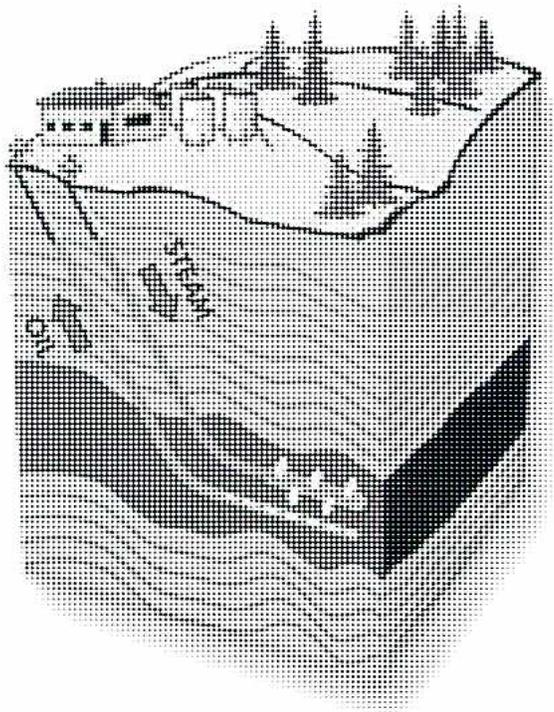
Figure 1
Steam Injection Schematic
Steam injection is a procedure for increasing the recovery of oil from wells that are partially depleted. The operation is particularly suited to the recovery of high viscosity (heavy) crude oils or bitumen. Bitumen is a heavy, viscous form of crude oil. At room
These boilers are often described as oilfield heaters. They are specifically designed for use in steam and/or hot water secondary oil recovery operations. They are forced circulation steam generators with a single-pass or once-through coil. They are designed to produce steam of 75 to 80% quality (20-25% water) depending upon the solids concentration in the feedwater. Steam quality is based on the percentage of water in the steam.
In order to keep the salts in the boiler water dissolved and to avoid deposits on the tubes, the steam produced contains 20% moisture. The salts stay dissolved in the water portion of the steam and water mixture. The effluent steam, consisting of a steam water mixture is injected into the well without any prior phase separation. The boiler has no steam drum, which simplifies controls.
Outputs from these boilers range from 5 million kJ/h to 50 million kJ/h in standard sizes. In special cases, output from the boilers can be up to 125 million kJ/h with working pressures up to 20 000 kPa. In smaller sizes, the boilers are skid or truck mounted for mobility. The larger units are usually built on a chassis or frame, which makes the boiler easier to move. Fig. 3 shows an external view of a skid mounted packaged steam-flood boiler.
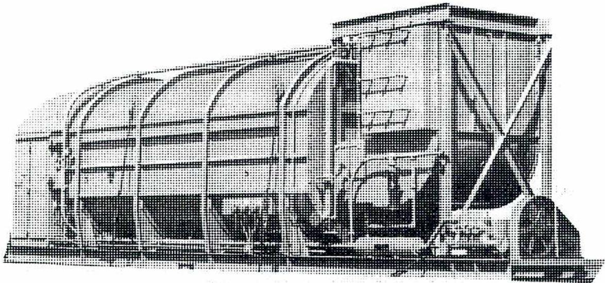
Figure 3
Packaged Steam-flood Boiler
Boilers can be trailer mounted and are self-contained. Feedwater treatment is incorporated into the boiler units to ensure trouble-free operation. The feed water is treated for hardness and the oxygen removed. Feedwater with a relatively high percentage of solids can be handled in these types of boilers provided the solids have been converted to soluble form.
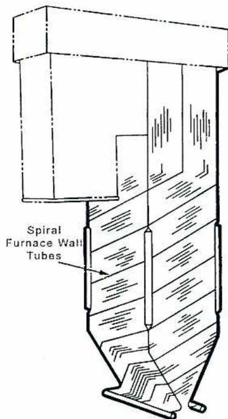
Figure 5
Steam-flood Boiler Tubing Layout
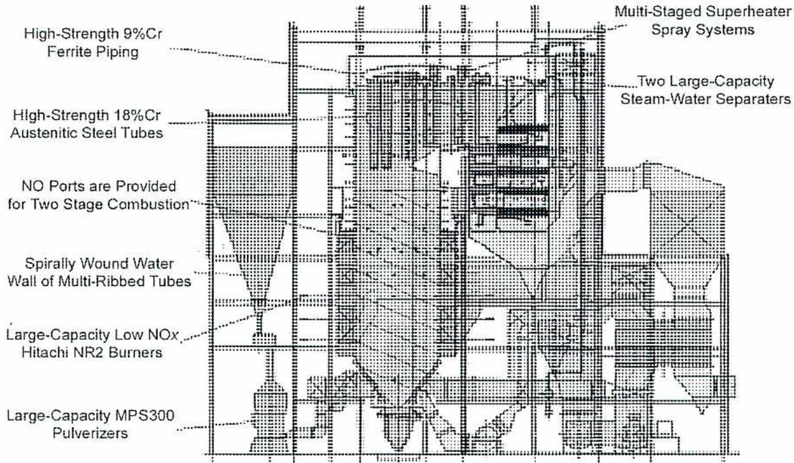
Figure 6
Oil Sands Steam-flood Boilers
The steam-flood boilers shown in Fig. 6 are permanently mounted with their controls mounted inside a building. The boilers are connected to steam injection piping as shown in Fig. 2.
Describe typical designs, components, and operating strategies for fluidized bed boilers (bubbling bed and recirculating bed types).
Fluidized bed combustion is one method of burning coal. In a fluidized bed boiler, there is a series of modules each containing a bed of inert granular material, such as ashes or crushed rocks. Crushed coal from 1.6 mm to 6 mm is injected into the bed using an air stream.
Combustion air is introduced underneath the bed through the plenum chamber and is blown through the entire bed. The combustion air lifts the bed, as well as the crushed coal, off the supporting grid and the bed becomes fluidized. Initial ignition of the bed is accomplished using auxiliary burners. Fig. 7 shows a schematic sketch of the arrangement.
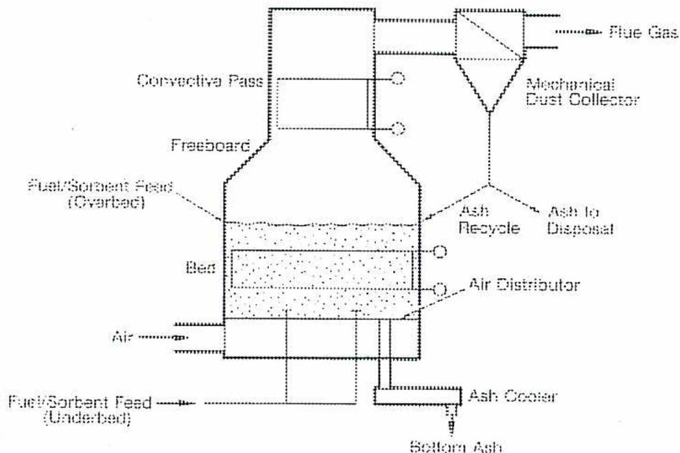
The diagram illustrates the internal structure and flow of a fluidized bed boiler module. At the bottom, a plenum chamber receives 'Air' and 'Fuel/Sorbent Feed (Underbed)'. This mixture is directed to an 'Air Distributor' grid, which creates a 'Bed' of burning material. Above the bed is the 'Freeboard' section. On the left, a 'Convectiva Pass' containing boiler tubes is situated within the freeboard. 'Fuel/Sorbent Feed (Overbed)' is injected into the bed from the left. 'Flue Gas' exits through the top right. A 'Mechanical Dust Collector' is connected to the top right outlet. 'Ash to Disposal' is shown exiting from the right side of the freeboard. 'Ash Recycle' is indicated by a line returning from the dust collector to the bed. At the bottom right, 'Bottom Ash' passes through an 'Ash Cooler' before exiting the module.
Figure 7
Fluidized Bed Boiler Module
Because of the low operating temperatures, an inexpensive material such as \( \text{CaCO}_3 \) (lime) can be added to the bed. It acts as a sorbent to remove \( \text{SO}_2 \) (sulphur dioxide) from the flue gases. \( \text{SO}_2 \) emissions can be reduced by up to 80% using this process.
There are two types of fluidized bed boilers:
The bubbling fluid bed boiler is shown in Fig. 9. The particles in the bed are kept in suspension by an upward flow of air and combustion gases. The bed is in a fluid-like state and is at a distinct level that can be easily seen. This mixing of air and fuel leads to complete combustion of the fuel. The bed temperature is between \( 815^\circ\text{C} \) and \( 875^\circ\text{C} \) . Depending which type of fuel is used, extra heat transfer surface area may be added which keeps the bed temperature lower. The heat transfer surface is in-bed tube bundles that have water flowing through them. The tube bundles can be subject to high erosion rates.
In coal-fired BFB boilers, the solids in the flue gas are separated out and routed back to the fluidized bed. The separation takes place down stream of the economizer using cyclone separators. Material can be added or removed from the bed to control the bed level. The BFB design is simpler and less expensive than the circulating fluid bed design.
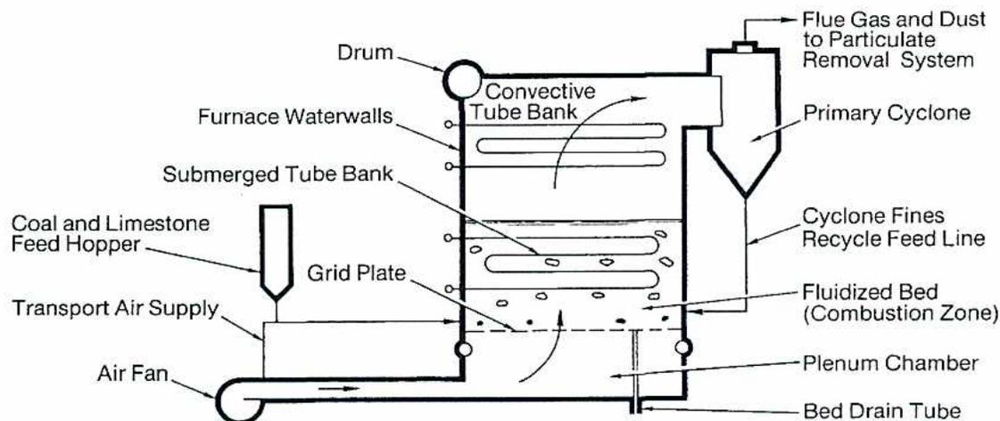
The diagram illustrates the internal structure of a Bubbling Fluid Bed (BFB) boiler. At the bottom left, an 'Air Fan' draws air into a 'Plenum Chamber'. From the plenum, 'Transport Air Supply' enters the furnace through a 'Grid Plate'. A 'Coal and Limestone Feed Hopper' is positioned above the grid plate. The 'Fluidized Bed (Combustion Zone)' is shown as a region of burning fuel particles just above the grid plate. 'Submerged Tube Bank' tubes are located within this bed. Above the bed, 'Furnace Waterwalls' line the sides, and a 'Convective Tube Bank' is situated in the upper furnace. A 'Drum' is connected to the top of the convective tube bank. On the right side, a 'Primary Cyclone' separates 'Flue Gas and Dust' (which exit through a duct) from 'Cyclone Fines' (which are returned via a 'Recycle Feed Line' to the bed). A 'Bed Drain Tube' is located at the bottom right of the furnace.
Figure 9
Fluidized Bed Boiler-BFB
(Reproduced with permission of ALSTOM Power Inc., Windsor, CT, from Combustion: Fossil Power Systems (copyright 1981))
A smaller industrial bubbling bed boiler design is shown in Fig. 11. This design has no in-bed tube bundle. A large quantity of the solids from the bed is recycled internally around the furnace. Collection devices, such as cyclones, collect particles in the flue gases. The solids collected are recycled back to the bed.
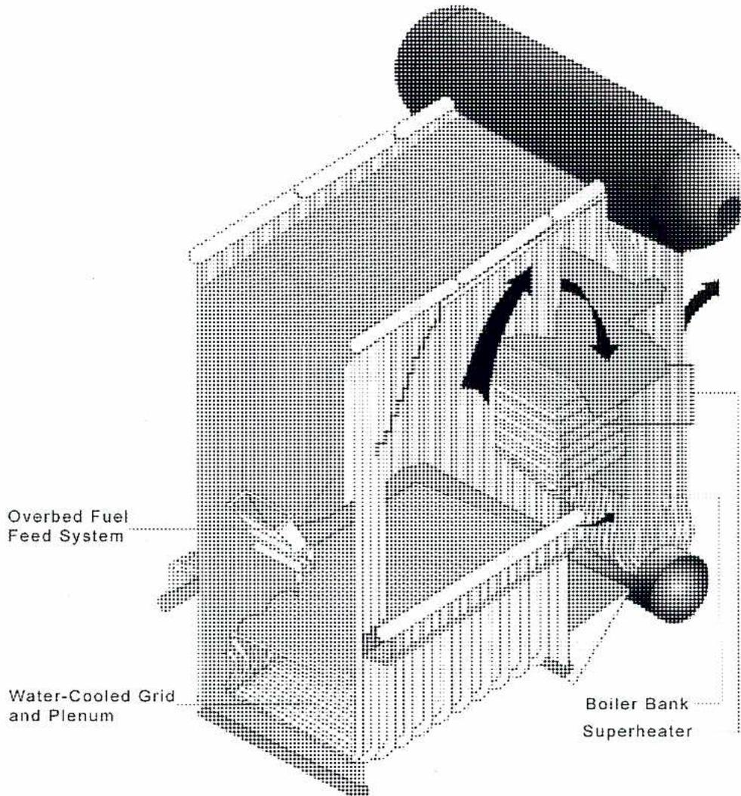
A 3D cutaway perspective view of an industrial bubbling bed boiler. The diagram shows the internal structure of the furnace. On the left, an 'Overbed Fuel Feed System' is shown entering the furnace. At the bottom left, a 'Water-Cooled Grid and Plenum' is indicated. On the right side, a 'Boiler Bank' and 'Superheater' are shown. Arrows indicate the upward flow of flue gases through the center of the furnace, with a large, dark, cylindrical component (likely a cyclone or part of the exhaust system) at the top.
Figure 11
Industrial Bubbling Bed Boiler
(Courtesy of Foster Wheeler Energia Oy)
A CFB boiler uses more fluidizing air to the bed than a BFB boiler, and there is no distinct bed level. Fluidizing air causes the fuel and bed material to rise and circulate through the combustion area. From the combustion area, the fluidizing air goes to the hot cyclone collector. The solids collected in the cyclone collector are routed back to the bed.
A 314 MW CFB boiler is shown in Fig. 13. It is a similar layout to Fig. 12, but has no secondary fluid bed.
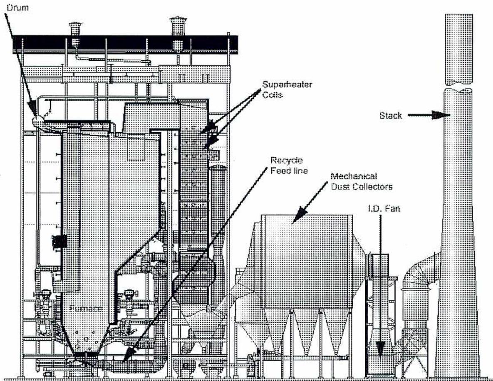
A detailed schematic cross-section of a 314 MW Circulating Fluidized Bed (CFB) boiler. The diagram shows the following components and flow paths:
Figure 13
Circulating Fluidized Bed Boiler, 314 MW Size
(Courtesy of Foster Wheeler Energia Oy)
Describe typical designs, components, and operating strategies for heat recovery steam generators.
The concept of using waste energy to generate steam is increasing. This is because of higher fuel costs, and the need to scavenge heat from industrial processes. Environmental concerns from burning solid fossil fuels like coal have increased the use of cleaner fuels like natural gas. Gas turbines burn natural gas and turn electrical generators. In power generation, the waste heat from a gas turbine can supply steam to power a steam turbine. Such combined cycles push overall power cycle efficiency to nearly 50%.
A simple combined cycle power generation system can have a single gas turbine generator, an HRSG (heat recovery steam generator), and a single steam turbine generator with condenser and auxiliary systems. This type of cycle is shown in Fig. 14 and Fig. 15.
Many more complex configurations are possible. For example, the HRSG can be designed to supply the pressure of steam required for deaeration and feedwater heating. This steam replaces extraction steam used for feedwater heating in conventional steam plant cycles.
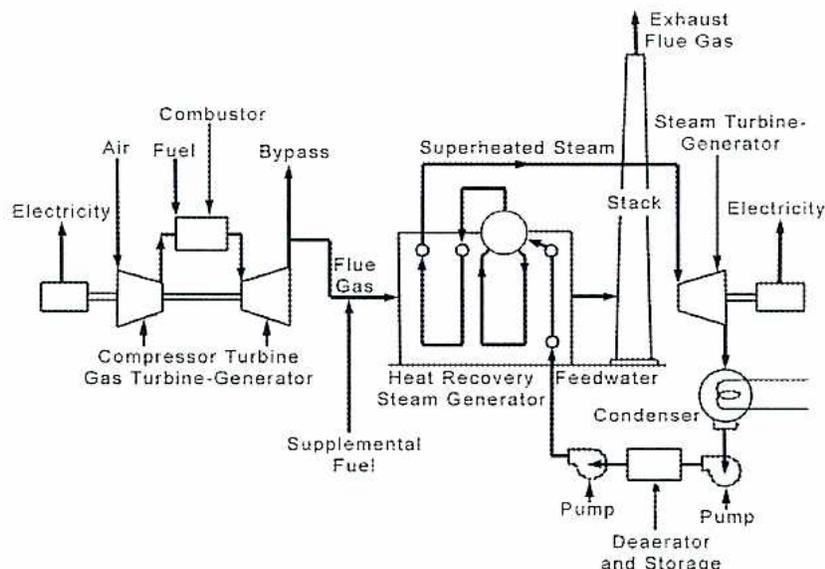
The diagram illustrates a combined cycle power plant. On the left, a gas turbine section consists of a compressor, a combustor, and a turbine. Air enters the compressor, and electricity is generated by a generator connected to the turbine. Fuel is added in the combustor. The exhaust from the gas turbine is directed to a Heat Recovery Steam Generator (HRSG). A bypass line allows some exhaust to bypass the HRSG and go directly to the exhaust stack. Supplemental fuel can be added to the HRSG. The HRSG contains three heat exchangers: an evaporator, a superheater, and a reboiler. Feedwater enters the HRSG and is heated to produce superheated steam. This steam is directed to a steam turbine generator, which also produces electricity. The exhaust from the steam turbine goes to a condenser. The condensed steam is then pumped through a deaerator and storage tank, and then pumped back into the HRSG. The exhaust from the gas turbine is labeled 'Exhaust Flue Gas' and 'Stack'.
Figure 14
Combined Cycle Power Generation
(Courtesy of Babcock and Wilcox)
Cogeneration cycles are similar to the combined cycles. In cogeneration, the heat recovery system is used to produce steam for process needs or for space heating. Any extra steam can be used to generate electricity. The cogeneration cycle is illustrated in Fig. 17. The total efficiency of such systems can approach 80%.
![Schematic diagram of a Cogeneration Cycle. Air enters a Compressor, which is connected to a Combustor. Fuel and Steam enter the Combustor. The Combustor is connected to a Combustion Turbine. The Combustion Turbine is connected to an HRSG (Heat Recovery Steam Generator). The HRSG has a Stack and a Blowdown line. The HRSG is connected to a Steam Turbine. The Steam Turbine is connected to an Air Cooled Condenser. The Air Cooled Condenser is connected to a Process Condensate line. The Air Cooled Condenser is also connected to a Cooling Tower and a Process Steam line.](cfda9df1319e04207eb28bcefd1dab7b_img.jpg)
The diagram illustrates a cogeneration cycle. Air enters a compressor, which is connected to a combustor. Fuel and steam enter the combustor. The combustor is connected to a combustion turbine. The combustion turbine is connected to an HRSG (Heat Recovery Steam Generator). The HRSG has a stack and a blowdown line. The HRSG is connected to a steam turbine. The steam turbine is connected to an air-cooled condenser. The air-cooled condenser is connected to a process condensate line. The air-cooled condenser is also connected to a cooling tower and a process steam line.
Figure 17
Cogeneration Cycle
(Westinghouse Electric Company)
The heat recovery steam generator (HRSG) is sometimes called a waste-heat recovery boiler (WHRB) or turbine exhaust gas boiler (TEG). The main application for these boilers is steam generation using gas turbine exhaust gas as a heat source.
HRSG designs vary depending upon the application. The gas flow can be either horizontal or vertical, depending upon the floor space available. HRSGs that have steam and mud drums as well as circulation through the tubes may be natural circulation or forced circulation. Most horizontal gas flow HRSG boilers use natural circulation.
Another category of HRSG boilers is the once-through design. In this arrangement, the water is pumped into the coils and leaves as superheated steam. There are no drums or circulation through the tubes. Once-through boilers have high alloy tubes and can operate without water flow through the tubes.
![A schematic cross-section of a vertical Heat Recovery Steam Generator (HRSG). At the bottom, two exhaust ducts from a gas turbine merge and point upwards into the HRSG casing. Inside, the gas flows through three horizontal sections of heat-exchanging tubes: a Superheater Section at the top, two Evaporator Sections in the middle, and an Economizer Section at the bottom. Water enters from the left, passes through the economizer, then the evaporators, and finally the superheater before exiting as steam from the top left. Arrows indicate the upward flow of gas through the ducts.](cfef993dcc8fb513de79eb1f93cf26ae_img.jpg)
Figure 19
Vertical HRSG
Reproduced with permission of ALSTOM Power Inc., Windsor, CT, from Combustion: Fossil Power Systems (copyright 1981)
The vertical HRSG in Fig. 19 has two ducts for gas turbine exhaust. It is drum type with controlled circulation. The horizontal HRSG, as shown in Fig. 20, is used in a cogeneration cycle. It produces high-pressure steam at 7000 kPa that is fed to a turbine generator. It has an intermediate (2400 kPa) and a low-pressure (350 kPa) steam drum. The steam from these drums is used for process heating (cogeneration). The cogeneration cycle was illustrated in Fig. 17. An external view of a horizontal HRSG is shown in Fig. 21.
Compare different designs of heat recovery steam generators (HRSG): natural circulation, controlled circulation and once-through (OTSG).
Natural circulation HRSGs are usually configured for a horizontal exhaust gas path with the heat exchanger tube banks arranged vertically. The vertical tubes are usually top supported to provide for unrestricted downward expansion. Circulation of the water-steam mixture in the evaporator tubes is achieved by the difference in density of the water in the downcomers and the density of the steam/water mixture in the heated tubes. Circulation ratios vary from 8:1 to 15:1, water to steam. Natural circulations HRSGs have steam drums and mud drums similar to fired natural circulation boilers.
![Figure 22: Heat Transfer Through Heating Surfaces of a HRSG. A graph showing Temperature (°C) on the Y-axis (0 to 700) versus Energy Transfer (MW) on the X-axis (0 to 250). The graph illustrates the temperature profile of exhaust gas (solid line) and water/steam (dashed line) through the heating surfaces: Superheater, Evaporator, and Economizer. The gas temperature decreases from approximately 650°C at 0 MW to 150°C at 220 MW. The water/steam temperature increases from approximately 580°C at 0 MW to 100°C at 220 MW, with a constant temperature plateau at 300°C in the Evaporator section between 50 MW and 150 MW.](252ea48d02dce93965b91746fb376f35_img.jpg)
| Energy Transfer (MW) | Gas Temperature (°C) | Water/Steam Temperature (°C) | Component |
|---|---|---|---|
| 0 | ~650 | ~580 | Superheater inlet |
| 50 | ~550 | 300 | Superheater / Evaporator inlet |
| 150 | ~350 | 300 | Evaporator / Economizer inlet |
| 220 | ~150 | ~100 | Economizer / Feedwater Heating inlet |
Figure 22
Heat Transfer Through Heating Surfaces of a HRSG
![A detailed 3D isometric schematic of a Natural Circulation Boiler. The diagram shows the flow of water and steam through various components. At the bottom left, a 'Duct Burner' is shown. Above it, a 'High Pressure Superheater' is located. To the right, there are several tube banks: 'High Pressure Bank', 'Intermediate Pressure Bank', and 'Low Pressure Bank'. Above these banks are 'High- and Intermediate-Pressure Economizers' and a 'Feed Preheater'. At the top, there is a 'High Pressure Steam Drum' and an 'Integral Deaerator Storage Drum'. A 'Deaerator' is also shown. A 'High Pressure Superheater Outlet' is indicated on the left side. A tall chimney stack is on the far left.](0f2a1e4a7b12fe5b8749882ecd636f5c_img.jpg)
Figure 23
Natural Circulation Boiler
Controlled circulation HRSGs (also called forced or assisted circulation) are usually configured for a vertical exhaust gas path with the heat exchanger tube banks arranged horizontally. Circulation pumps aid in circulation of the water/steam mixture in the evaporators. Circulation ratios are usually less than 3:1 to 5:1 (water to steam ratio), although some suppliers go as low as 1.5:1
Disadvantages of Controlled Circulation are:
The once-through steam generator (OTSG), in its simplest form, is a continuous tube heat exchanger in which preheating, evaporation, and superheating of the feedwater takes place consecutively, see Fig. 25 and Fig. 26. Many tubes are mounted in parallel and are joined by headers thus providing a common inlet for feedwater and a common outlet for steam. Water is forced through the tubes by a boiler feedwater pump, entering the OTSG at the “cold” end. The water changes phase along the circuit and exits as superheated steam at the “hot” end of the unit. Gas flow is in the opposite direction to that of the water flow (counter current flow).
![Figure 25: OTSG Water Flow Patterns. The diagram shows two schematic representations of an OTSG. The left side is labeled 'HP Evaporator' and the right side is labeled 'IP Evaporator'. Both diagrams show 'Flue Gas' entering from the left and exiting on the right. 'BFW In' (Boiler Feedwater In) enters from the bottom right and flows through a series of tube banks. 'Steam Out' exits from the top left. The water flow is indicated by arrows, showing a continuous path through the tubes. The HP Evaporator diagram shows a single tube bank, while the IP Evaporator diagram shows two tube banks.](bd671b21db63e6fdb2196e9b18502aac_img.jpg)
Figure 25
OTSG Water Flow Patterns
Unlike conventional circulation heat recovery steam generators, OTSGs do not have a defined economizer, evaporator, or superheater sections. The point at which the steam-water interface exists is free to move through the horizontal tube bank depending on the heat input, mass flow rate, and pressure of the water.
The single point of control for the OTSG is the feedwater control valve. Its actuation depends on predefined operating conditions that are set through the control system. The control system or DCS is connected to a control loop, which monitors the variables of the gas turbine load and outlet steam conditions. If a change in gas turbine load is monitored, the control loop sets the feedwater flow to a predicted value based on the turbine exhaust temperature, producing steady state superheated steam conditions.
Describe typical designs, components, and operating strategies for supercritical steam generators.
Natural circulation in a boiler depends upon the difference in the density of a column of water and the density of a column containing a steam/water mixture. The difference in density produces the circulation head. At low pressures, the difference in densities is substantial.
The difference in density between water and saturated steam becomes progressively less with increased pressure and disappears at the critical pressure 22 106 kPa. Critical pressure is reached when there is no difference in density between water and saturated steam. This is illustrated graphically in Fig. 27. Above the critical pressure, the density of water and steam is the same. This means that for a boiler operating at the critical pressure, there can be no natural circulation, and pumps must be used to provide forced circulation.
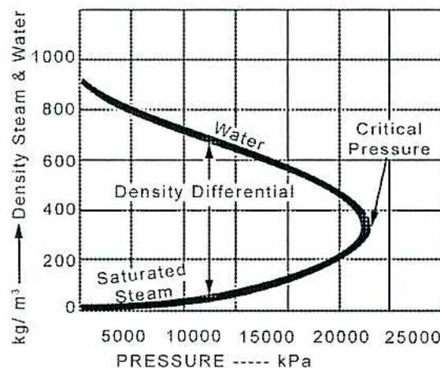
| Pressure (kPa) | Density Water (kg/m³) | Density Saturated Steam (kg/m³) |
|---|---|---|
| 0 | ~1000 | ~0 |
| 5000 | ~850 | ~50 |
| 10000 | ~750 | ~150 |
| 15000 | ~650 | ~300 |
| 20000 | ~550 | ~450 |
| 22106 (Critical) | ~340 | ~340 |
Figure 27
Pressure-Density Curve for Water and Steam
Steam generators operating above critical pressure are classed as supercritical and steam generators operating below critical pressure are classed as subcritical. The boiler in Fig. 28 is a universal pressure boiler built by Babcock & Wilcox. Universal pressure boilers can be designed for subcritical and supercritical pressures. The single furnace is
Once-through boilers are often called Benson Boilers. Mark Benson patented the concept of the once-through boiler in 1922. Licenses to build Benson Boilers can be obtained from the Siemens Company. Some licensees are Babcock-Hitachi, Babcock and Wilcox, Foster Wheeler and Babcock Borsig.
Another once-through design is the spiral-tube Sulzer furnace, technology owned by ABB of (Switzerland). The Benson design and the Sulzer design look similar. Both use spiral-wound furnace tubing and separator vessels for startup. Sulzer license holders include Korean Heavy Industries (Korea), Mitsubishi Heavy Industries (Japan) and Alstom Power.
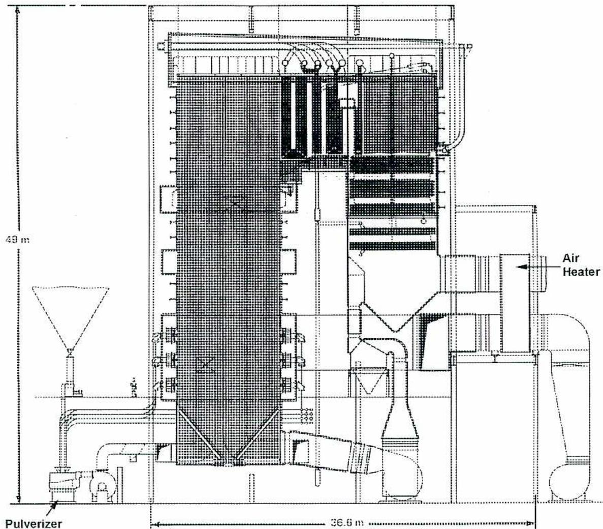
The diagram is a technical cross-section of a large industrial boiler. It shows a tall, rectangular furnace structure. At the bottom left, a 'Pulverizer' unit is connected to the furnace. On the right side, an 'Air Heater' is shown. The overall height is marked as 49 m and the width as 36.6 m. The drawing includes numerous internal details such as tubes, structural supports, and external piping.
Figure 28
B & W Universal Pressure (Once-through) Boiler
Courtesy of Babcock and Wilcox
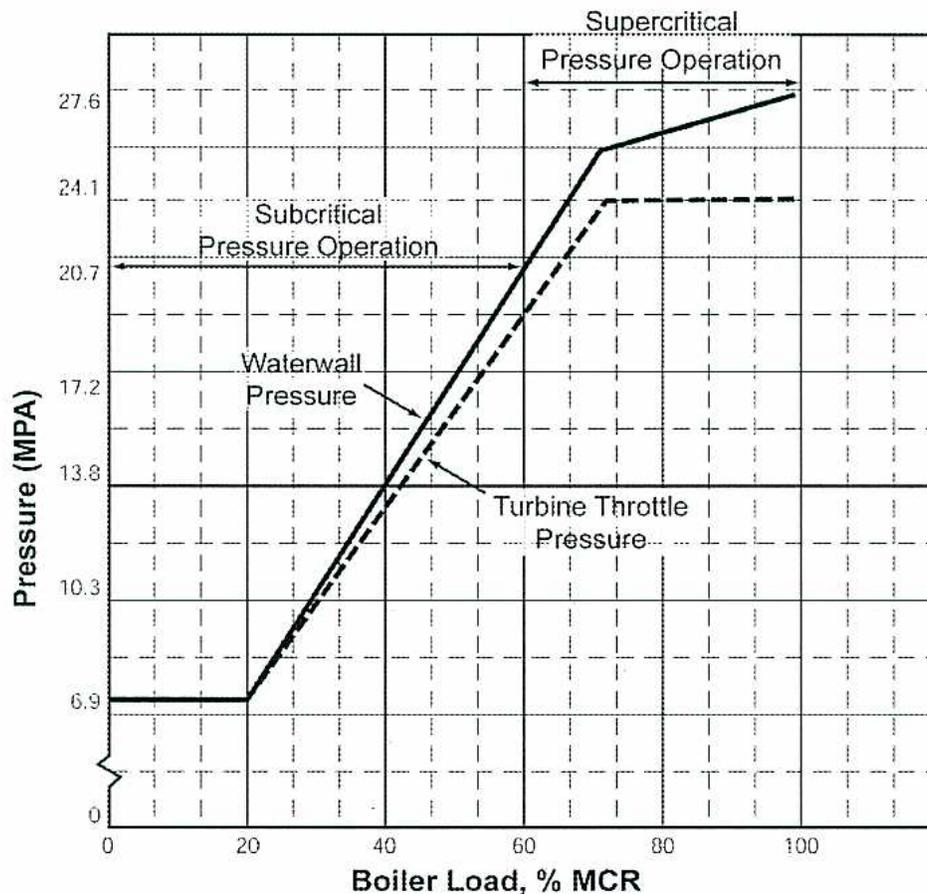
| Boiler Load (% MCR) | Waterwall Pressure (MPA) | Turbine Throttle Pressure (MPA) |
|---|---|---|
| 0 | 6.9 | 6.9 |
| 20 | 6.9 | 6.9 |
| 40 | 13.8 | 13.8 |
| 60 | 20.7 | 20.7 |
| 80 | 24.1 | 24.1 |
| 100 | 27.6 | 24.1 |
Figure 30
Sliding Pressure Boilers
Partial sliding pressure designs of steam generators have boiler outlet throttling valves to keep the operating pressure of the furnace wall system at the design pressure for most of the load range. The pressure is allowed to slide down for the lower 30% or so of the load range. Above the 30% range, turbine load control is achieved with the turbine throttle valves only. This design is well suited for base load operation. Pumped water recirculation is still required for starting up and for very low loads.
A 3D perspective view of a furnace wall section. The wall is shown as a series of vertical panels. A single tube is depicted spiraling around the outer surface of the wall. At the top, a header box is shown with two tubes entering it from below. A label 'Spiral Furnace Wall Tubes' has an arrow pointing to one of the spiraling tubes.
Figure 32
Spiral Wall Furnace Tube Layout
A detailed cross-sectional diagram of a Benson boiler. The diagram shows various internal components and their connections. On the left, labels point to 'High-Strength 9%Cr Ferrite Piping', 'High-Strength 18%Cr Austenitic Steel Tubes', a note 'NO Ports are Provided for Two Stage Combustion', 'Spirally Wound Water Wall of Multi-Ribbed Tubes', 'Large-Capacity Low NOx Hitachi NR2 Burners', and 'Large-Capacity MPS300 Pulverizers'. On the right, labels point to 'Multi-Staged Superheater Spray Systems' and 'Two Large-Capacity Steam-Water Separators'. The boiler structure includes a furnace at the bottom, a water wall, and various superheater and separator sections above.
Figure 33
Benson Boiler with Spiral Wall Furnace
Describe typical designs, components, and operating strategies for black liquor recovery boilers.
In North America, the pulp and paper industry is the fourth largest industrial consumer of energy and the third largest in energy purchases. It is also a leading cogenerator of electric power. About one-half of the steam and power consumed by this industry is generated from fuels produced in the pulp and paper process. The main source of fuel for the process is spent pulping liquor. The heating value of the spent liquor is a reliable fuel source for steam and power production. Wood and bark are also used as fuel in the process.
Over 80% of the paper produced in North America is done using the Kraft Process. This process uses sodium sulfate ( \( \text{Na}_2\text{SO}_4 \) ) as a makeup chemical. The process starts with feeding wood chips into the digester. This is also known as pulping as shown in Fig. 36. Here the chips are cooked under pressure in a steam-heated aqueous solution of sodium hydroxide ( \( \text{NaOH} \) ) and sodium sulfide ( \( \text{Na}_2\text{S} \) ). The solution is known as white liquor or cooking liquor. After cooking, the pulp is separated or washed from the liquor. The liquor at this stage is called weak black liquor. It contains a 13% to 17% concentration of solids. The weak black liquor is concentrated in evaporators to produce the strong black liquor which is used for fuel. Flue gases from the boiler are used as the heat source for the evaporators.
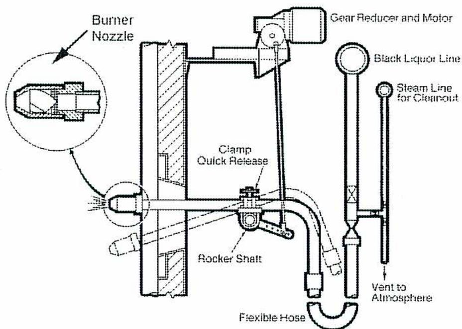
The diagram illustrates the mechanical components of a black liquor burner. On the left, a circular inset provides a detailed view of the 'Burner Nozzle'. The main assembly shows the nozzle mounted on a wall, connected to a 'Black Liquor Line'. A 'Gear Reducer and Motor' is positioned at the top, linked to a 'Rocker Shaft' via a 'Clamp Quick Release' mechanism. A 'Steam Line for Cleanout' enters from the right and terminates at a 'Vent to Atmosphere'. A 'Flexible Hose' is shown connecting the burner nozzle area to the black liquor supply line.
Figure 37
Black Liquor Burner
The primary function of the recovery boiler is to process black liquor. The boiler can fire auxiliary fuel that can be natural gas or fuel oil. The auxiliary fuel burners are located at the same level as the secondary air or above. These burners are used to:
Upper level burners make burning black liquor and auxiliary fuel firing possible without affecting lower furnace conditions.
Fig. 38 shows the location of the black liquor nozzles to the smelt bed. The secondary air is fed in above the lower combustion area of the furnace. Completion of burning takes place above the secondary air introduction.
The flows of materials into and out of a black liquor boiler are shown in Fig. 39. A black liquor recovery boiler is shown in Fig. 40. Note the location of the black liquor nozzles, as well as the location of the primary air and secondary air. The unit has black liquor heaters and a salt-cake mixing tank located at the burner level.
If water contacts molten smelt, it causes a violent explosion. It is not a chemical reaction but a physical reaction. It is a result of gases expanding very quickly and violently. They produce a shock wave type of reaction. Tube leaks onto the smelt bed cause a dangerous explosion. If a furnace tube leak is detected, many boilers have an emergency drain system to drain the boiler to just above the furnace floor.
If the black liquor is too weak, it can cause an explosion. The black liquor furnace is designed with added structural strength in case of explosion.
Describe typical designs, components, and operating strategies for refuse boilers used in waste disposal.
Disposal of garbage and waste materials is a problem for any society. Common methods of disposal are landfill and incineration (burning). Landfill sites are becoming less available and less desirable. Burning of refuse is an alternative to landfill. Heat recovery and strict air pollution guidelines are required for refuse incinerators. The basic incinerators with waste heat recovery have evolved into water-wall boilers with integral stokers. The boilers have become large enough to provide steam for turbine generator sets and commercial power production.
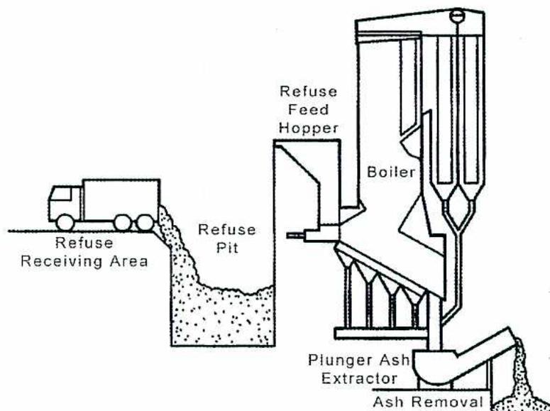
The diagram illustrates a refuse handling system. On the left, a truck is shown in a 'Refuse Receiving Area', dumping waste into a 'Refuse Pit'. From the pit, the waste is fed into a 'Refuse Feed Hopper', which then leads into a 'Boiler'. At the bottom of the boiler, a 'Plunger Ash Extractor' is shown, which removes the ash into an 'Ash Removal' area.
Figure 41
Refuse Handling System
(Courtesy of Babcock and Wilcox)
There are two main techniques of burning refuse. They differ in the amount of preparation the fuel goes through. The first technique is called mass burning, and uses the fuel as received with little preparation. Only large non-combustible items or bulky items are removed. Trucks dump the refuse directly into pits, as shown in Fig. 41.
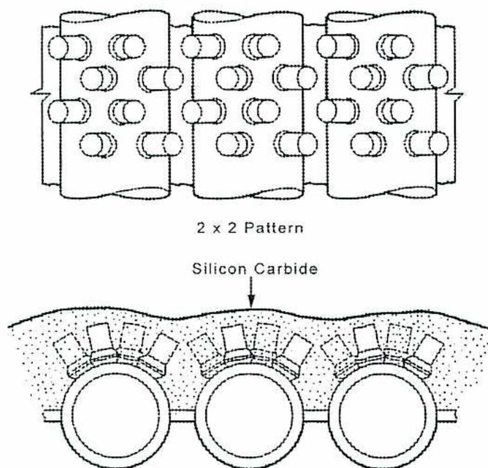
2 x 2 Pattern
Silicon Carbide
Figure 43
Tubes with Pin Studs
(Courtesy of Babcock and Wilcox)
The refractory still allows for heat transfer from the furnace to the tubes. The use of bimetal tubes is also used to prevent corrosion. The carbon steel tubes have an Inconel™ outer layer. Inconel™ is an alloy composed mostly of nickel and chromium. The Inconel™ tubes experience little corrosion when exposed to refuse firing conditions.
A mass-burning refuse-to-energy plant layout is shown in Fig. 44. Trucks dump refuse into a storage pit. Overhead cranes keep the refuse feed hoppers full. Feeders move the refuse to the traveling grate stokers for combustion. The flue gases pass from the boiler to dry scrubbers and a bag-house to remove particulates from the gases, before going to the stack.
![Schematic diagram of a Refuse Fuel Handling System. The diagram shows a cross-section of a furnace with various components labeled: Refuse Inlet, Overfire Air Duct, Charging Ram, Hydraulic Grate Drives, From Forced Draft Fan, Undergrate Air, Furnace Walls, Auxiliary Input Burners, Overfire Air Ports, Reciprocating Grates, Partitions, Undergrate Air Control Dampers, and Bottom Ash Discharge. The refuse is shown being fed through an inlet and ram into the furnace, where it moves over reciprocating grates. Air is supplied from overfire air ducts and undergrate air plenums. Auxiliary burners are located in the upper furnace walls. Ash is discharged at the bottom right.](a5ee5c23b6dc52ec1d724b76d5a5f58f_img.jpg)
Figure 45
Refuse Fuel Handling System
(Courtesy of Babcock and Wilcox)
Describe typical designs, components, and operating strategies for biomass boilers.
Biomass is anything that is or was alive, such as leaves, grasses, bamboo, vine clippings, sugar cane, coffee grounds, and rice hulls. Biomass boilers are usually designed to use wood as well. Wood comes in many forms such as: bark, wood sticks, sawdust, over and under sized wood chips, and even used wood pallets.
Biomass fuels are most often used in industrial processes where a large supply of energy for heating and drying is required. The production of pulp and paper, for example, requires large quantities of mechanical energy for grinding, chipping, and cooking. In order to produce a final product, the pulp must be dried, usually using steam. These energy requirements, along with the availability of waste wood products, make firing boilers with wood and biomass products economical and cost effective.
Steam supplies energy to the food processing industry. Cooking, drying, and canning all require a source of energy. These processes often leave behind waste products that can be used as fuel. Some examples are: coffee grounds, sugar cane fibre, coconut hulls, rice hulls, and nutshells. Often food producers install boilers which burn biomass material. The boilers produce steam, which can be used as an energy source for the plant. The equipment is similar to that used in the pulp and paper industry for burning wood by-products.
Some utility plants are fired by biomass fuels. These installations are made economical by either the high cost of fossil fuels in the area, or by a low cost supply of biomass fuel. Sometimes the plant is built as a stand-alone unit with a condensing steam turbine, and other times it is constructed next to a plant that can use exhaust steam.
Biomass is often burned in combination with a fossil fuel such as coal, natural gas or oil. Often these installations use a traveling grate, with the biomass added to the coal. When biomass is burned with oil or gas, a traveling grate is used for the biomass, and the gas or oil burners are located above the biomass fire.
The pinhole grate stoker (Fig. 48) used a water-cooled grate that is clamped to the floor tubes of the furnace. The grates have venture-type air holes to admit air to the burning material on the grate. This produces a semi-suspension mode of burning. The finer particles burn in suspension and the heavier particles accumulate on the floor as ashes. The ashes are removed by raking: either by manual or mechanical means. The advantage of the system is that little refractory is used and maintenance is low. The main disadvantage involves shutting down or reducing firing to remove the ashes.
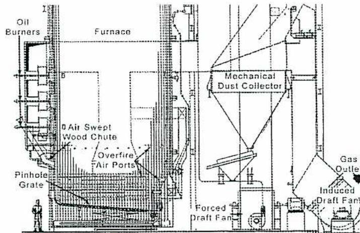
Figure 48
Pinhole Grate Stoker
(Courtesy of Babcock and Wilcox)
The traveling grate was developed as an improvement on the pinhole grate. It is a moving grate that allows for continuous ash removal. It has cast iron grate bars attached to chains. The chains are driven by a slow moving sprocket drive system. There are openings in the grate to feed air from under the grate to cool the bars and castings. Usually 60 to 85% of the combustion air is fed from below the grates. The traveling grate system is similar to the traveling grate systems used for firing coal. Problems associated with this type of system involve high maintenance of the grates and drive system components.
The vibrating grate systems, as shown in Fig.49, have grate bars attached to a frame that vibrates to remove the ash. The vibration is intermittent and is controlled by a timer. The vibrating grates may be air cooled or water-cooled. The water-cooled grates allow for high under-fed air temperatures. The vibrating grate system has lower maintenance costs than the traveling grate system. The vibration also serves to aid combustion by leveling out the bed of burning biomass.
![A detailed cross-sectional schematic of a Wood Fired Stirling Boiler. The diagram shows the internal structure of the boiler, including the furnace area with burners and a scroll burner, the boiler bank with a steam drum and lower drum, and various ducts and components. Labels include: Steam Drum, Superheater, Boiler Bank, Lower Drum, Gas Outlet, Air Heater, Furnace, Burners, Overfire Air Duct, Overfire Air Ports, Scroll Burner, Air-Swept Wood Chutes, Hydrograte Stoker, and Underfire Air Duct. A small human figure is shown at the bottom left for scale.](af7916c89a458fdab6c3f443217388ae_img.jpg)
Figure 51
Wood Fired Stirling Boiler
(Courtesy of Babcock and Wilcox)
Describe typical designs, components, and operating strategies for waste-heat boilers (firetube and watertube types).
A waste-heat boiler is used to produce steam in a similar way to a fired steam generator. The heating medium is a hot gas or liquid produced in a process by a chemical reaction. Waste heat boilers are common in petrochemical plants, gas plants, and oil refineries. The boiler itself is a heat exchanger, usually a shell and tube design. The steam is produced on the tube side or the shell side of the exchanger. The hot fluid is on the opposite side of the exchanger. Supplementary firing equipment may also be included if the heat load has to be met and the waste gas source is intermittent.
As in a steam generator, the waste-heat boiler generates a steam and water mixture. The steam and water mixture is circulated through a steam drum. The steam drum contains separation equipment for separating the steam from the water. The steam drum often serves a number of waste-heat boilers. Steam from the top of the steam drum may be piped straight to the process used in heating. Another option is to superheat the steam making it suitable to power steam turbines. The steam is superheated by hot process fluids in the process or by a series of coils in a cracking or reforming furnace. Some processes have a separately fired superheater. It is fired by natural gas or process gas.
Firetube waste-heat boilers are similar to firetube boilers in that the hot fluid is on the inside of the tubes. The water and steam mixture is on the shell side of the exchanger. They may have single or multiple passes, meaning the hot fluid may make one or more passes before exiting the exchanger. The shell side contains the water and steam mixture and is connected to a steam drum. The exchanger may be arranged horizontally or vertically. Examples of firetube waste-heat boilers with steam drums are shown in Fig. 52 and Fig. 53.
or to the superheater for further heating. Fig. 54 illustrates a watertube waste-heat boiler, including steam and mud drums and a section of steam generating tubes.
Operation of a watertube waste-heat boiler is simpler than a fired boiler in that there is no firing equipment, such as fuel gas trains and fans. The most critical part is keeping the drum level at its required setting. The water chemistry must be maintained with suitable quality feedwater, chemical feeds and blowdowns. The unit temperatures are also monitored. These steam generators are very reliable, producing steam whenever the process is up and running. Often steam from fired boilers is required to replace the waste-heat generated steam when starting up or shutting down the process.
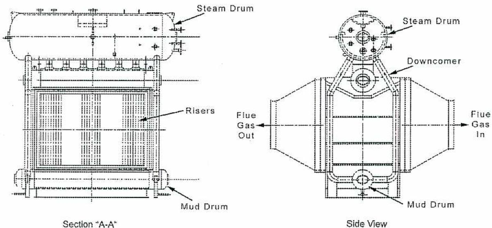
The diagram illustrates the internal structure of a watertube waste-heat boiler. On the left, 'Section "A-A"' provides a cross-sectional view showing the 'Steam Drum' at the top, a bundle of vertical 'Risers' in the center, and the 'Mud Drum' at the bottom. On the right, the 'Side View' shows the 'Steam Drum' at the top, 'Downcomer' tubes descending from it, a bundle of vertical tubes in the center, and the 'Mud Drum' at the bottom. Arrows indicate the flow of 'Flue Gas In' from the right and 'Flue Gas Out' to the left, passing through the boiler's internal structure.
Figure 54
Watertube Waste-heat Boiler